BAD TIME STUDIO PRESENTS

A CINEMATIC EXPERIENCE
নিশীথ নদী
THE MIDNIGHT RIVER
“Somewhere in Bangladesh, the river never sleeps.”
EXPLORE MODE · DISCOVER 10 HIDDEN DETAILS
A CINEMATIC EXPERIENCE BY K.I.ROHAN
22° 49′ N89° 32′ E · BANGLADESH
A QUIET JOURNEY AFTER DARK · EXPLORE THE RIVER
THE RIVER AT REST
Listen closely. The night is never silent.
00:00
02:00
NISHITH NODI·BAD TIME STUDIO
EXPLORE MODE/Tap the river, boat, moon and riverbank to discover hidden details.
✦
RIVER JOURNAL UPDATEDA quiet discovery
The river has another story.
LISTEN TO THE NIGHT
River soundscape
A quiet mix of water, insects, distant wildlife and the boat. Adjust each layer to your taste.
Sound begins when you enter the river.
FIELD NOTES · 12:17 AM
Secrets of the river
Explore slowly. Tap points of interest in Explore Mode to reveal the stories hidden in the dark.
0 of 10 discovered0%
A BAD TIME STUDIO EXPERIENCE
নিশীথ নদী
THE MIDNIGHT RIVER
CREATED BY
K.I.ROHAN
PREPARING THE RIVER
A NOTE FROM THE RIVER
Your browser could not start the 3D scene.
Try the latest version of Chrome or Edge with hardware acceleration enabled.